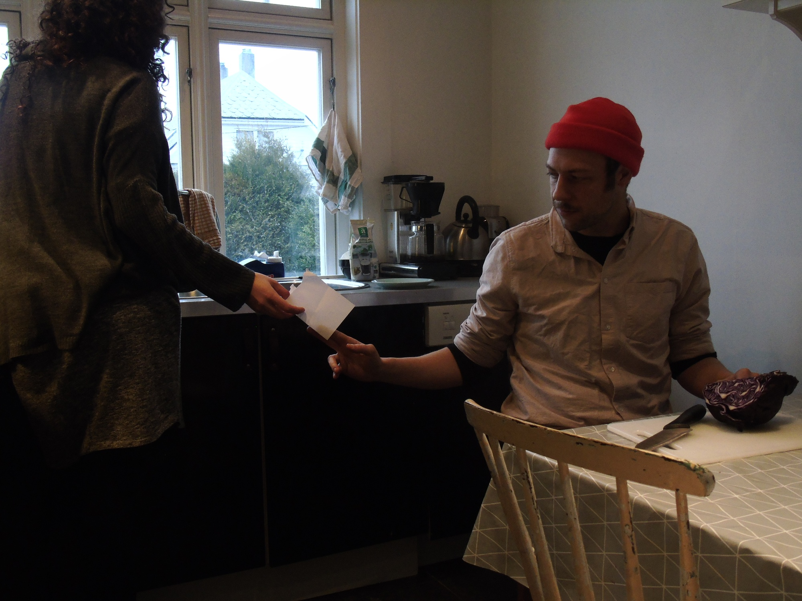
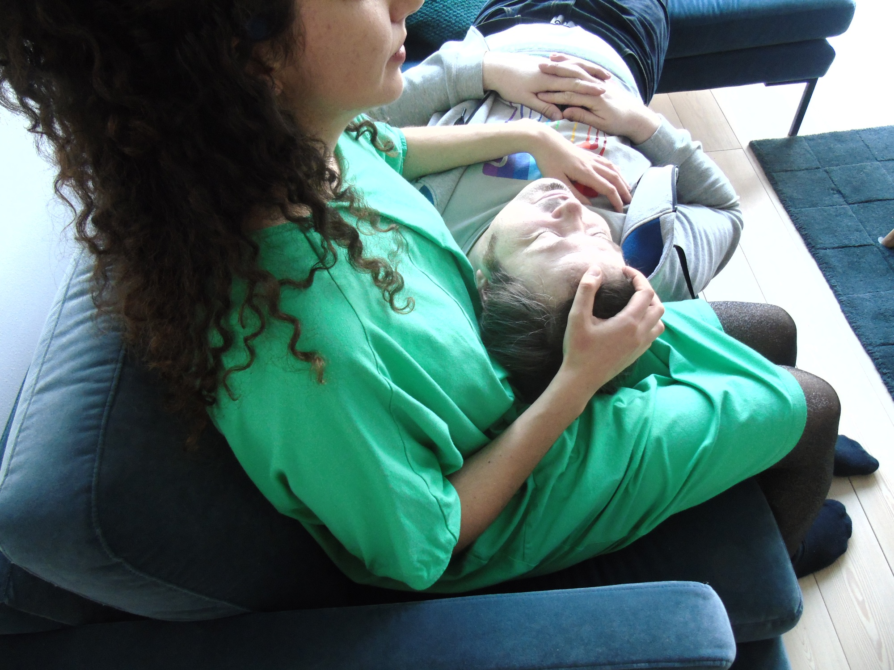
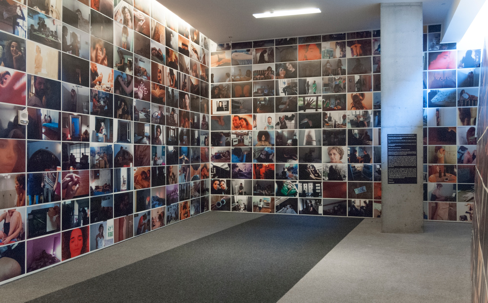
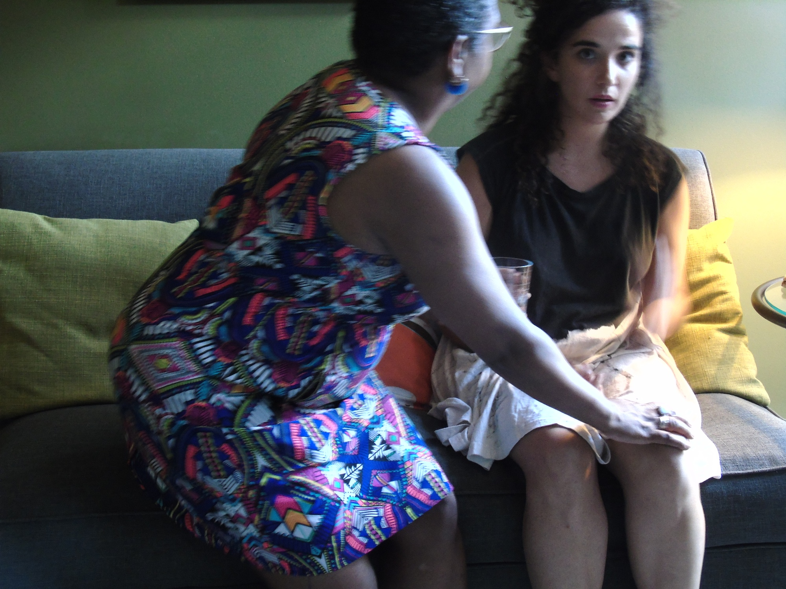
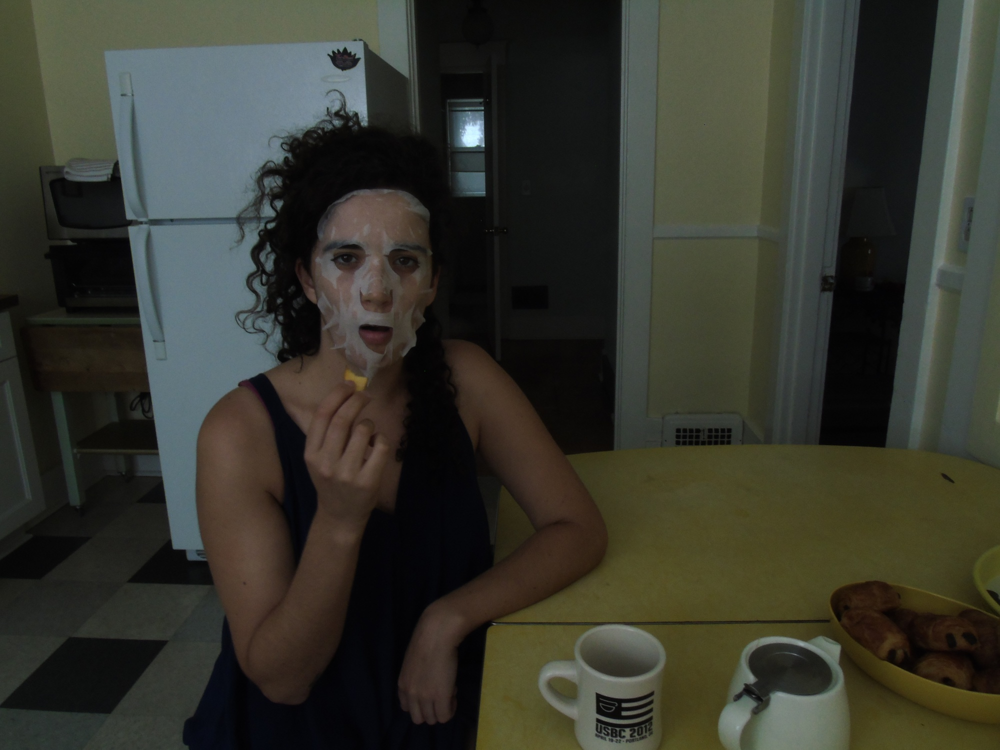

Raquel Andre
Visual and Performace Artist

Raquel André is a Portuguese artist whose creative practice involves sharing time and space with strangers—people of all nationalities, genders, and ages—whom she agrees to meet in an unfamiliar apartment and spend an hour building a fictional intimacy. These experiences are documented in what the artist refers to as a growing “Collection of People.” The photographs and the details of these encounters are the content for an ever-evolving performance, as well as providing the subject matter for books, theater, and other artistic formats. The 10-year project is divided into four different collections—Lovers, Collectors, Artists, and Spectators—and involves encounters with people in places such as Lisbon, Ponta Delgada, Rio de Janeiro, Loulé, Minde, Paredes de Coura, Sever do Vouga, Ovar, Manaus, Barreiro, Bergen, Stavanger, Oslo, Warsaw, and throughout the United States.
Conversation
From a conversation with T. Cole Rachel
December 20, 2018
I started this thing in 2014 when I was living in Rio de Janeiro. I was 23 years old, I was alone, and it was supposed to be an artist’s residency for four months, but I stayed in Rio for seven years. I was living there because it felt strong for me as a woman, as an artist, being alone and living in Brazil. It was powerful for me because it was the first time I understood where I came from and what it means being an artist in Europe, in confrontation with the culture of Brazil. I’ve always traveled a lot, but it was the first time to actually live in another country. I was wondering what it means to have a home, and what are the things that you need to feel at home. In Brazil I was always moving around because it was hard to rent anything since I didn’t have a visa. Over seven years, I lived in 14 different houses. “The Collection of Lovers,” which is the first project of the collection of people, started from those questions. At the time I was living in a house, and I had a neighbor who I saw every day. Each day we passed by each other, but we never spoke. There was always that smile of good morning, but nothing else. I was curious about him, and I wanted to go to his house and talk with him, because I knew the door of his house, but we had never spoken.
So it was at that time that I decided I wanted to go to a stranger’s house and ask that person to photograph me in their home. I was wondering what would be necessary for that image, for that frame, for someone to look at that picture and believe that I was a part of their home. So I did my first meeting with a “lover.” At the time, I didn’t know what the project would become.
It was just a meeting with a stranger who I’d met on the street. I went to his house, and then I spent 16 hours with him. We had lunch together, we had dinner together. I met his boyfriend, his family, and his cats. We talked a lot, and we took a lot of pictures.
The conversation was so deep.
It was so fast that we went into the big questions around intimacy—”What is intimacy? What is a home?”
Afterwards I decided, “Okay, I have to go to a second stranger’s house.” It was the second one that asked me to lay in his bed watching a film, while he photographed me. He asked me to watch Stranger than Paradise because it was his ex-girlfriend’s favorite film. As I was watching the film, the favorite film of a stranger, I was wondering what it meant—was this his artistic project now? Am I taking her place?
After that second meeting, I decided to do this as an ongoing collection.
I was doing my Masters degree at that time, in Brazil, and it was about collection in general, specifically about how collection can be a process of creation for the visual arts or the performing arts. I started setting up more of these meetings with strangers, and it kind of just grew from there.
Yes, a lot. In the beginning I thought it was more about what it means to be in someone’s house, and what is intimacy for another person, but then I started to have the same questions for myself. What is intimacy for me? That is always the question, and I still really don’t know the answer. I’ve now received 186 different definitions of intimacy, but I still really don’t know.
We all have different explanations of that word. So it’s an infinite collection, because it doesn’t have an end. Each of us has a different approach to the word “intimacy” and a different idea of what it means to experience intimacy with another person. It’s the perfect topic for an artistic project because it’s inexhaustible.
I discovered that in about 90% of these meetings with strangers, loneliness is a major topic, as is fear and desire. It felt very powerful to realize that.
I was also curious how different this experience of sharing time with a stranger would be in different countries—going from Portugal to Brazil to Norway to the United States. It’s not. The issues around the topic are the same.
The experience might be slightly different, but the topics that always come up—the loneliness and the fear and the desire for connection—are always similar.
It’s a funny thing for me because now my personal life is so mixed up in my professional life, but I think it’s interesting that people often have so much fear of interacting with a stranger. People will say, “Oh, it’s so weird that you are with a stranger”—but why? Why is it weird? In my experience of doing this, only two of the meetings were really bad. The other 184 were amazing.
Also, you’d think that this would make me less inhibited or shy in some ways, but even now I have another neighbor who I smile at every day but who I still haven’t talked to. I feel anxious—should I say hello? Should I talk to him? It’s still the same. I’m not so different, even after 186 lovers.
Yes. That has happened many times, from both sides.
A lot of times it feels like people just need to talk, and they can say things to a stranger that maybe they can’t say to a friend or a family member. Some people don’t have the opportunity to see a therapist or don’t even realize that they need that, or perhaps they don’t have the courage to talk with their friends about certain issues. But with me, they feel like they can.
It’s very interesting to see what is really an art project opening that door for people. Also,
it can be like a moment of therapy for me as well, a moment to cry and share my own experience. Sometimes that happens.
I was always working with collections, but not my own collections. I worked with collections of other people. I did a catalog of the the last words of famous people, and then I did a performance piece around that. I studied collections, and what a collections means.
I came to understand that a collection is not just about the object itself, but the memory and the story behind the object—the secret that the object leaves behind.
I started to understand what a collection means. It’s like the things that you can’t keep, you can’t capture, so you put that meaning on an object.
Walter Benjamin wrote that a collection could organize your life, because through the objects that you have, you can write your past. Here is something you bought in France. Here is that thing your girlfriend gave you. Here is the thing my boyfriend brought me back from America.
It’s a way of organizing your life, understanding your own history. The things you own and the things you save, those become your own personal museum. We are all collectors in some way.
Your clothes are a collection, they tell a story about you every day. So when thinking about this
I wondered, “Okay, what is the most ephemeral thing there is?” What can’t be captured? Our feelings? Our memories? Our experiences?
It’s impossible, of course, to collect people, to collect interactions, but because this is an artistic project, it becomes possible. With the collection of collectors, it was about the memory of the objects the people are collecting, and with the artists, it’s about this ephemeral moment of a creation. With the spectators, it’s about the moment that the people watch my performance, which itself is ephemeral. It’s about collecting those ephemeral moments, being between a spectator and an artist.
And for the collection of lovers, it’s about collecting a person through an intimate moment. For me, intimacy is the most ephemeral thing there is between two people. When we are living through an intimate moment, we are not always aware of it, because we are just living it. Later it’s always like, “Ah, that felt very personal,” or
when you look at someone and you lock eyes with them, you are not aware that, “Oh, that was intimate.” I’m always wondering, how I can capture that moment.
I also think it’s interesting doing this project as a woman. If a man were creating a “collections of lovers” it might be viewed very differently.
I also like to play with what the word “lover” means—what it means to love someone, how that can mean lots of very different things.
Right now, this project takes up about 80% of my artistic life. I have a producer who I work with on the project, but I’m the one that’s looking for financial support and doing all the travel. It’s not just doing the collection and meeting with the lovers and doing the shows, but before all that, I do a lot of work. Also,
it’s not easy being a young Portuguese artist, a woman, doing my work.
Sometimes I do projects with other people, but not so much. Right now, I’m working with a group of 22 teenagers on a project that will last for one year that also involves the National Theater in Lisbon. It’s been a nice change. It’s not about collections. I am not collecting them.
Some Things
Raquel André Recommends